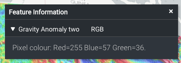
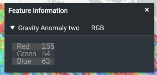
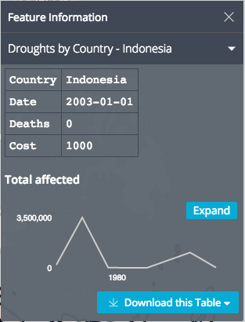

Feature Information Template
You can add a featureInfoTemplate to the items in your catalog json file like so:
{
"catalog": [
{
"name": "ArcGIS Server",
"type": "group",
"items": [
{
"name": "Gravity Anomaly two",
"type": "esri-mapServer",
"url": "http://www.ga.gov.au/gisimg/rest/services/earth_science/Geoscience_Australia_National_Geophysical_Grids/MapServer/6",
"attribution" :
{
"text" : "Geoscience Australia",
"link" : "http://www.ga.gov.au"
},
"featureInfoTemplate" : "Pixel colour: <b>Red={{Red}} Blue={{Blue}} Green={{Green}}</b>."
}
]
}
]
}
The template will replace all occurrences of {{property}} with the value of the property for that feature.
The result is:

instead of:

You can provide a template to use for the name of the collapsible section (eg. to replace RGB in the example above), like so:
"featureInfoTemplate" : {
"template": "<div>Pixel colour: {{>foobar}}</div>",
"name": "Red {{Red}}"
}
More details
The template is rendered using Mustache, so you can use all of its features here.
In particular, you can render properties that include html by using triple-braces, eg. {{{property}}}.
You can make use of partial templates (and even recursive templates) by specifying your template and partials as a json object, eg.:
"featureInfoTemplate" : {
"template": "<div>Pixel colour: {{>foobar}}</div>",
"partials": {
"foobar": "<b>Red={{Red}} Blue={{Blue}} Green={{Green}}</b>"
}
}
After Mustache has rendered the template, the result is displayed using Markdown, so you could also write:
"featureInfoTemplate" : "Pixel colour: *Red={{Red}} Blue={{Blue}} Green={{Green}}*."
Formatting numbers
The preferred way to format numbers is using the formats option, eg:
"featureInfoTemplate": {
"template": "Pixel colour: <b>Red={{Red}} Blue={{Blue}} Green={{Green}}</b>.",
"formats": {
"Red": {
"type": "number",
"maximumFractionDigits": 2
},
"Green": {
"type": "number",
"maximumFractionDigits": 2
},
"Blue": {
"type": "number",
"maximumFractionDigits": 2
}
}
}
"type" specifies the type of formatting that will be applied to the property. Here we are using "number" formatting which is also the default formatting if "type" is not supplied.
The supported format options are:
"maximumFractionDigits": X: To reduce the number of decimal places to a maximum of X digits."minimumFractionDigits": X: To increase the number of decimal places to a minimum of X digits."useGrouping": true: To show thousands separators."style": "percent": To show 0.15 as 15%.
A second method is to use terria.formatNumber directly in the template. This accepts an initial JSON string describing the same options as above. To simplify the notation, the quotes around the keys are optional here.
"featureInfoTemplate": "template": "Pixel colour: <b>Red={{#terria.formatNumber}}{maximumFractionDigits:3}{{Red}}{{/terria.formatNumber}}</b>."
URL-encoding strings
To URL-encode a value in a template, use terria.urlEncode or terria.urlEncodeComponent. For example:
Test: {{#terria.urlEncode}}http://example.com/a b{{/terria.urlEncode}}
Test: {{#terria.urlEncodeComponent}}W/HOE#1{{/terria.urlEncodeComponent}}
Formatting dates
Similar to formatting numbers you can format dates in the "formats" section by suppliying "dateTime" in the "type" property, eg:
"featureInfoTemplate": {
"template": "Date: {{Date}}",
"formats": {
"Date": {
"type": "dateTime";
"format": "dd-mm-yyyy HH:MM:ss";
}
}
}
The date format style used for the "format" property is the style from the npm dateformat package, e.g. "dd-mm-yyyy HH:MM:ss" or "isoDateTime".
As with number you can also use terria.dateTimeformat directly in the template. This accepts an initial JSON string describing the same options as above.
"featureInfoTemplate": "template": "{{#terria.formatDateTime}}{format: \"dd-mm-yyyy HH:MM:ss\"}2017-11-23T08:47:53Z{{/terria.formatDateTime}}</b>."
Time-series charts
For features with time-varying table-based data structures (eg. CSV, SOS2, SDMX-JSON, if there is a time column), the feature info panel also includes a chart of the data over time, eg.

You can place this chart in your template using {{terria.timeSeries.chart}}. Alternatively, you can access the following component information:
{{terria.timeSeries.xName}}- the x-column name{{terria.timeSeries.yName}}- the y-column name{{terria.timeSeries.title}}{{terria.timeSeries.id}}{{terria.timeSeries.units}}- the column units as a comma-separated string.{{terria.timeSeries.data}}- the data as a comma-separated string.
Please note:
* If any of the component information above contains double-quotes, double quotes will be removed before TerriaJS processes the template further.
* If any of the component information above is used as part of tag attributes, it must be surrounded by double-quotes. e.g. <chart y-column="{{terria.timeSeries.yName}}"></chart>
So you could reconstruct the chart manually as:
<h4>{{terria.timeSeries.title}}</h4>
<chart x-column="{{terria.timeSeries.xName}}"
y-column="{{terria.timeSeries.yName}}"
id="{{terria.timeSeries.id}}"
column-units="{{terria.timeSeries.units}}">
{{terria.timeSeries.data}}
</chart>
or use this as a basis to customise the chart.
Other supporting data
The clicked point's latitude and longitude are also available as {{terria.coords.latitude}} and {{terria.coords.longitude}}.
The current time for the layer is avaliable as {{terria.currentTime}}.
More examples
Some examples are here: https://github.com/TerriaJS/terriajs/blob/master/wwwroot/test/init/csv.json, and charts.json.
You can add this directly to your catalog by appending #build/TerriaJS/test/init/csv.json to the URL to your map, eg. http://localhost:3001/#build/TerriaJS/test/init/csv.json.